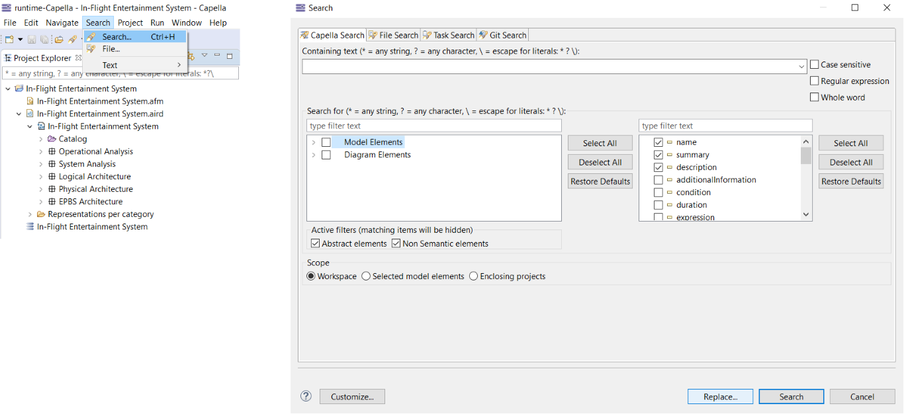
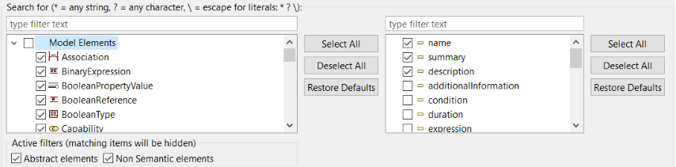
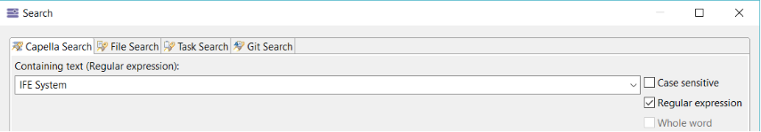
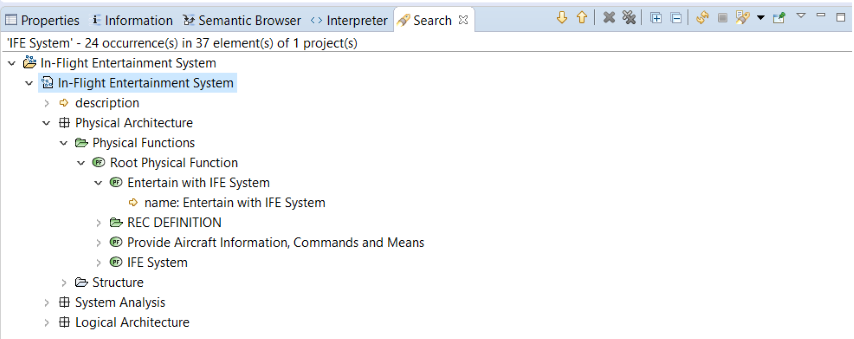
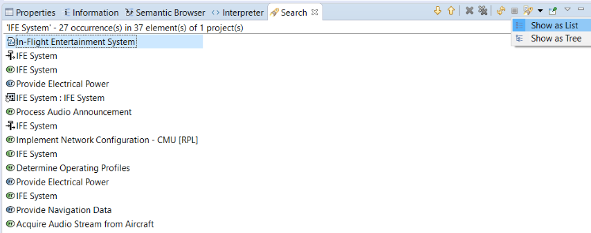

Capella provides Search & Replace functionalities on model elements that follow the Eclipse Search & Replace convention. Several options are provided to enable fine grained Search & Replace on Capella models.
To open the Search & Replace window dialog, go to the Search toolbar (Ctrl + H).

Fig. Search & Replace toolbar menu.
Model element scope can be customized in the Search For section which allows us to specify the granularity of content to search for:
On the left side of the Search For section, the meta-classes can be selected, the right panel will be updated with the union of the attributes of the selected meta-classes. We have the option to apply the default search for granularity by pressing the Restore Defaults buttons.

Fig. Model element search for scope options.
The find text is used to match model elements before performing the search. Several options can be chosen:

Fig. Find pattern options.
Note: selecting “ Wildcards” options disables “ Whole expression” option.
The Capella Search dialog provides a section to define the search scope which only concerns opened sessions:
Fig. Model scope options
From the Capella Search dialog we have the option to fill a text pattern and then perform:
When you perform a search in Capella, the matching model elements according to the selected criteria in the search dialog will be found. The result will be displayed in separate window as below, following the Eclipse Search & Result conventions.

Fig. Search result window
The Capella search result can be displayed as tree or list. 
Fig. Search result tree or list mode
In the Capella search result window we will be able to perform operations and manage the result like text replacement or navigation to the element in Project Explorer.
Fig. Search result operations
The Capella search result window enables the possibility to replace a text pattern, a single occurrence or replace all the occurrences.
Fig. Model replace text pattern